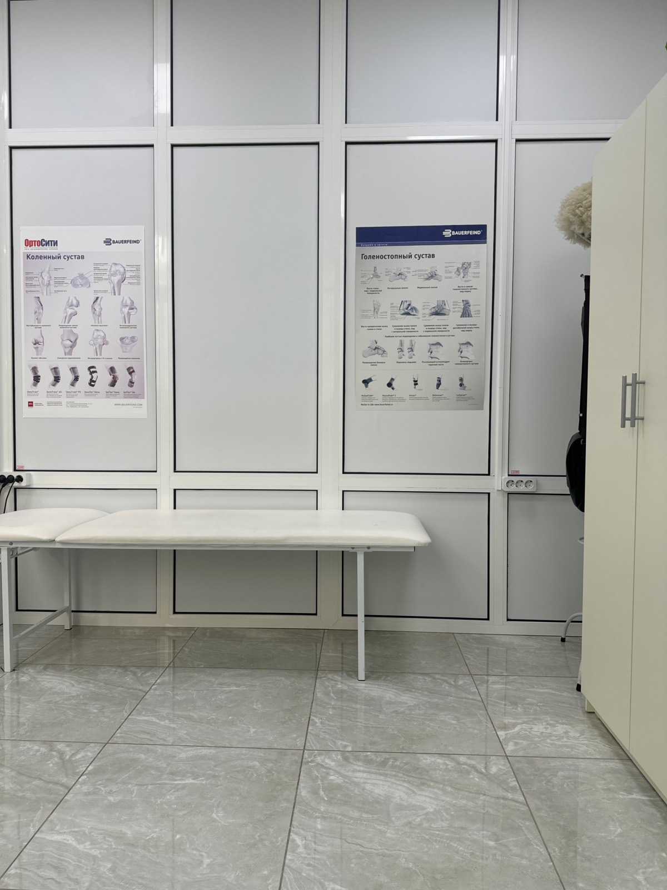
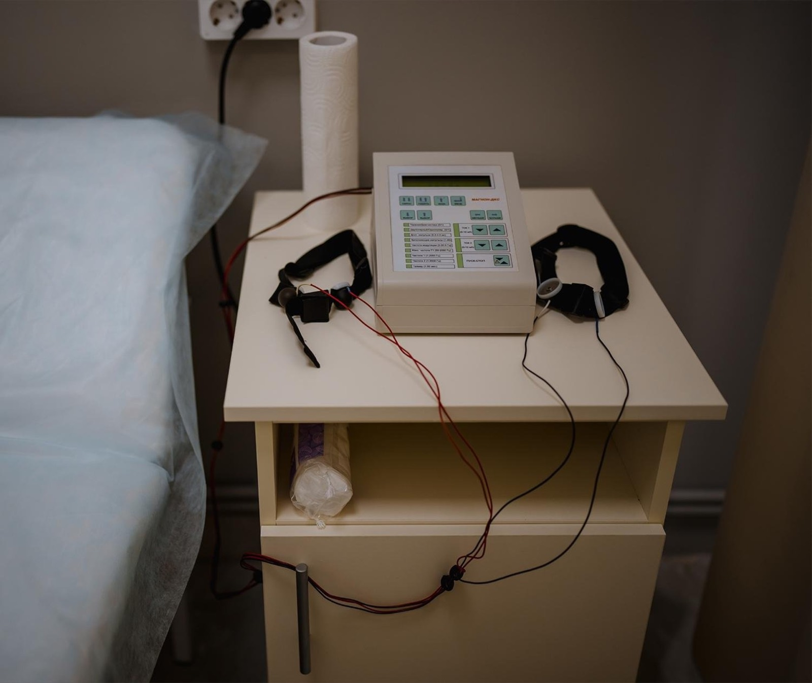
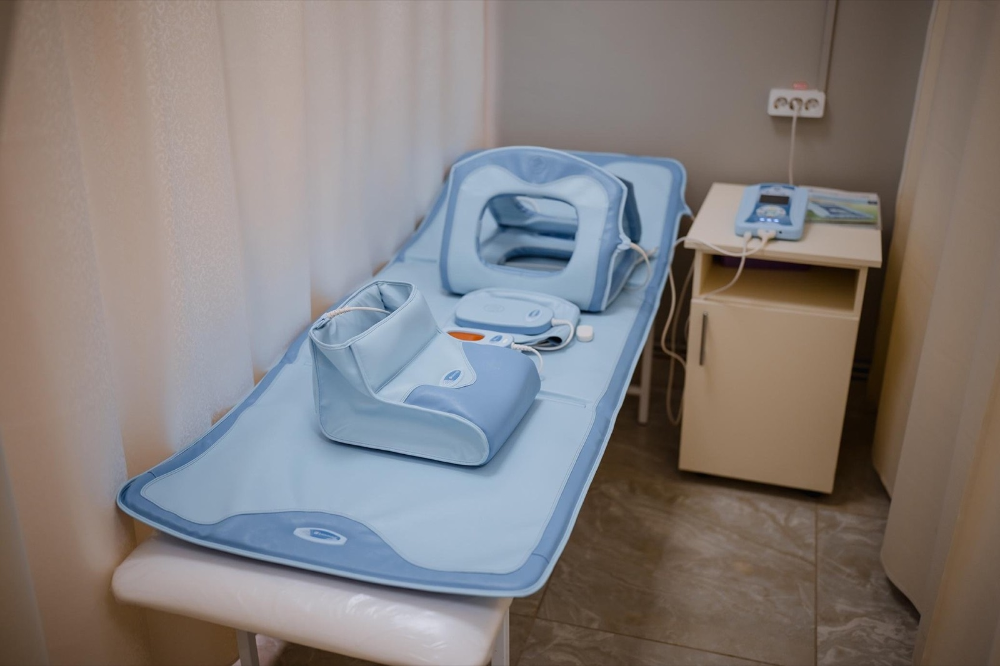

ХА
Хаджалов Абузар Магомедович
Травматолог-ортопед, кистевой реабилитолог
Суставы, травмы, восстановление после операций, PRP.
3 000 ₽
Суставы, травмы, восстановление после операций, PRP.
Боль в спине и шее, грыжи, спортивные травмы.
Методы лечения

наш кабинет ЛФКИндивидуально 60 минут, со взрослыми и детьми. Гимнастика при сколиозе по методике СИАС.
2 500 ₽Пяточная шпора, плечо, локоть, спина
3 000 ₽Для суставов и связок
10 500 ₽

Введение в сустав или блокада позвоночника — по назначению врача
3 000 ₽Высокоинтенсивная магнитотерапия
2 000 ₽Взрослые и детские
от 9 500 ₽Нажмите на любую методику выше — коротко расскажем, что это такое.
Пример концепции. Фото врачей, процедур и кабинетов — центра (фотосессия 2024 со старого сайта); фото на первом экране, «Стопа», «Реабилитация» и борьба — Unsplash. Цены — прайс клиники.